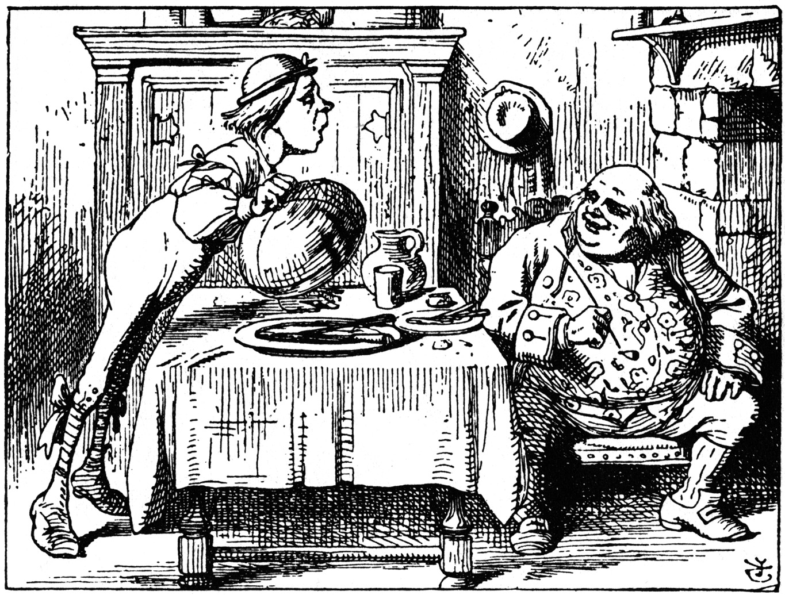

The Caterpillar and Alice looked at each other for some time
in silence: at last the Caterpillar took the hookah out of its
mouth, and addressed her in a languid, sleepy voice.
'Who are you?' said the Caterpillar.
This was not an encouraging opening for a conversation. Alice
replied, rather shyly, 'I--I hardly know, sir, just at present--
at least I know who I was when I got up this morning, but I think
I must have been changed several times since then.'
'What do you mean by that?' said the Caterpillar sternly.
'Explain yourself!'
'I can't explain myself, I'm afraid, sir' said Alice,
'because I'm not myself, you see.'
'I don't see,' said the Caterpillar.
'I'm afraid I can't put it more clearly,' Alice replied very
politely, 'for I can't understand it myself to begin with; and
being so many different sizes in a day is very confusing.'
'It isn't,' said the Caterpillar.
'Well, perhaps you haven't found it so yet,' said Alice; 'but
when you have to turn into a chrysalis--you will some day, you
know--and then after that into a butterfly, I should think you'll
feel it a little queer, won't you?'
'Not a bit,' said the Caterpillar.
'Well, perhaps your feelings may be different,' said Alice;
'all I know is, it would feel very queer to me.'
'You!' said the Caterpillar contemptuously. 'Who are
you?'
Which brought them back again to the beginning of the
conversation. Alice felt a little irritated at the Caterpillar's
making such very short remarks, and she drew herself up
and said, very gravely, 'I think, you ought to tell me who
you are, first.'
'Why?' said the Caterpillar.
Here was another puzzling question; and as Alice could not
think of any good reason, and as the Caterpillar seemed to be in
a very unpleasant state of mind, she turned away.
'Come back!' the Caterpillar called after her. 'I've something
important to say!'
This sounded promising, certainly: Alice turned and came back
again.
'Keep your temper,' said the Caterpillar.
'Is that all?' said Alice, swallowing down her anger as well
as she could.
'No,' said the Caterpillar.
Alice thought she might as well wait, as she had nothing else
to do, and perhaps after all it might tell her something worth
hearing. For some minutes it puffed away without speaking, but at
last it unfolded its arms, took the hookah out of its mouth
again, and said, 'So you think you're changed, do you?'
'I'm afraid I am, sir,' said Alice; 'I can't remember things
as I used--and I don't keep the same size for ten minutes
together!'
'Can't remember what things?' said the Caterpillar.
'Well, I've tried to say "How doth the little busy
bee," but it all came different!' Alice replied in a very
melancholy voice.
'Repeat, "you are old, Father William,"' said the
Caterpillar.
Alice folded her hands, and began:--
'You are old, Father William,' the young man said, 'And
your hair has become very white; And yet you incessantly stand on
your head-- Do you think, at your age, it is right?'
'In my youth,' Father William replied to his son, 'I feared
it might injure the brain; But, now that I'm perfectly sure I
have none, Why, I do it again and again.'
Father William standing on head
'You are old,' said the youth, 'as I mentioned before, And
have grown most uncommonly fat; Yet you turned a back-somersault
in at the door-- Pray, what is the reason of that?'
'In my youth,' said the sage, as he shook his grey locks,
'I kept all my limbs very supple By the use of this ointment--one
shilling the box-- Allow me to sell you a couple?'
Father William somersaulting in the door
'You are old,' said the youth, 'and your jaws are too weak
For anything tougher than suet; Yet you finished the goose, with
the bones and the beak-- Pray how did you manage to do
it?'
'In my youth,' said his father, 'I took to the law, And
argued each case with my wife; And the muscular strength, which
it gave to my jaw, Has lasted the rest of my life.'

Father William having eaten the goose
'You are old,' said the youth, 'one would hardly suppose
That your eye was as steady as ever; Yet you balanced an eel on
the end of your nose-- What made you so awfully clever?'
'I have answered three questions, and that is enough,' Said
his father; 'don't give yourself airs! Do you think I can listen
all day to such stuff? Be off, or I'll kick you down
stairs!'
Father William balancing eel on nose
'That is not said right,' said the Caterpillar.
'Not quite right, I'm afraid,' said Alice, timidly;
'some of the words have got altered.'
'It is wrong from beginning to end,' said the Caterpillar
decidedly, and there was silence for some minutes.
The Caterpillar was the first to speak.
'What size do you want to be?' it asked.
'Oh, I'm not particular as to size,' Alice hastily replied;
'only one doesn't like changing so often, you know.'
'I don't know,' said the Caterpillar.
Alice said nothing: she had never been so much contradicted in
her life before, and she felt that she was losing her temper.
'Are you content now?' said the Caterpillar.
'Well, I should like to be a little larger, sir, if you
wouldn't mind,' said Alice: 'three inches is such a wretched
height to be.'
'It is a very good height indeed!' said the Caterpillar
angrily, rearing itself upright as it spoke (it was exactly three
inches high).
'But I'm not used to it!' pleaded poor Alice in a piteous
tone. And she thought of herself, 'I wish the creatures wouldn't
be so easily offended!'
'You'll get used to it in time,' said the Caterpillar; and it
put the hookah into its mouth and began smoking again.
This time Alice waited patiently until it chose to speak
again. In a minute or two the Caterpillar took the hookah out of
its mouth and yawned once or twice, and shook itself. Then it got
down off the mushroom, and crawled away in the grass, merely
remarking as it went, 'One side will make you grow taller, and
the other side will make you grow shorter.'
'One side of what? The other side of what?'
thought Alice to herself.
'Of the mushroom,' said the Caterpillar, just as if she had
asked it aloud; and in another moment it was out of sight.
Alice remained looking thoughtfully at the mushroom for a
minute, trying to make out which were the two sides of it; and as
it was perfectly round, she found this a very difficult question.
However, at last she stretched her arms round it as far as they
would go, and broke off a bit of the edge with each hand.
'And now which is which?' she said to herself, and nibbled a
little of the right-hand bit to try the effect: the next moment
she felt a violent blow underneath her chin: it had struck her
foot!
She was a good deal frightened by this very sudden change, but
she felt that there was no time to be lost, as she was shrinking
rapidly; so she set to work at once to eat some of the other bit.
Her chin was pressed so closely against her foot, that there was
hardly room to open her mouth; but she did it at last, and
managed to swallow a morsel of the lefthand bit.
'Come, my head's free at last!' said Alice in a tone of
delight, which changed into alarm in another moment, when she
found that her shoulders were nowhere to be found: all she could
see, when she looked down, was an immense length of neck, which
seemed to rise like a stalk out of a sea of green leaves that lay
far below her.
'What can all that green stuff be?' said Alice. 'And
where have my shoulders got to? And oh, my poor hands, how
is it I can't see you?' She was moving them about as she spoke,
but no result seemed to follow, except a little shaking among the
distant green leaves.
As there seemed to be no chance of getting her hands up to her
head, she tried to get her head down to them, and was delighted
to find that her neck would bend about easily in any direction,
like a serpent. She had just succeeded in curving it down into a
graceful zigzag, and was going to dive in among the leaves, which
she found to be nothing but the tops of the trees under which she
had been wandering, when a sharp hiss made her draw back in a
hurry: a large pigeon had flown into her face, and was beating
her violently with its wings.
'Serpent!' screamed the Pigeon.
'I'm not a serpent!' said Alice indignantly. 'Let me
alone!'
'Serpent, I say again!' repeated the Pigeon, but in a more
subdued tone, and added with a kind of sob, 'I've tried every
way, and nothing seems to suit them!'
'I haven't the least idea what you're talking about,' said
Alice.
'I've tried the roots of trees, and I've tried banks, and I've
tried hedges,' the Pigeon went on, without attending to her; 'but
those serpents! There's no pleasing them!'
Alice was more and more puzzled, but she thought there was no
use in saying anything more till the Pigeon had finished.
'As if it wasn't trouble enough hatching the eggs,' said the
Pigeon; 'but I must be on the look-out for serpents night and
day! Why, I haven't had a wink of sleep these three weeks!'
'I'm very sorry you've been annoyed,' said Alice, who was
beginning to see its meaning.
'And just as I'd taken the highest tree in the wood,'
continued the Pigeon, raising its voice to a shriek, 'and just as
I was thinking I should be free of them at last, they must needs
come wriggling down from the sky! Ugh, Serpent!'
'But I'm not a serpent, I tell you!' said Alice. 'I'm
a--I'm a--'
'Well! what are you?' said the Pigeon. 'I can see
you're trying to invent something!'
'I--I'm a little girl,' said Alice, rather doubtfully, as she
remembered the number of changes she had gone through that
day.
'A likely story indeed!' said the Pigeon in a tone of the
deepest contempt. 'I've seen a good many little girls in my time,
but never one with such a neck as that! No, no! You're a
serpent; and there's no use denying it. I suppose you'll be
telling me next that you never tasted an egg!'
'I have tasted eggs, certainly,' said Alice, who was a
very truthful child; 'but little girls eat eggs quite as much as
serpents do, you know.'
'I don't believe it,' said the Pigeon; 'but if they do, why
then they're a kind of serpent, that's all I can say.'
This was such a new idea to Alice, that she was quite silent
for a minute or two, which gave the Pigeon the opportunity of
adding, 'You're looking for eggs, I know that well enough;
and what does it matter to me whether you're a little girl or a
serpent?'
'It matters a good deal to me,' said Alice hastily;
'but I'm not looking for eggs, as it happens; and if I was, I
shouldn't want yours: I don't like them raw.'
'Well, be off, then!' said the Pigeon in a sulky tone, as it
settled down again into its nest. Alice crouched down among the
trees as well as she could, for her neck kept getting entangled
among the branches, and every now and then she had to stop and
untwist it. After a while she remembered that she still held the
pieces of mushroom in her hands, and she set to work very
carefully, nibbling first at one and then at the other, and
growing sometimes taller and sometimes shorter, until she had
succeeded in bringing herself down to her usual height.
It was so long since she had been anything near the right
size, that it felt quite strange at first; but she got used to it
in a few minutes, and began talking to herself, as usual. 'Come,
there's half my plan done now! How puzzling all these changes
are! I'm never sure what I'm going to be, from one minute to
another! However, I've got back to my right size: the next thing
is, to get into that beautiful garden--how is that to be
done, I wonder?' As she said this, she came suddenly upon an open
place, with a little house in it about four feet high. 'Whoever
lives there,' thought Alice, 'it'll never do to come upon them
this size: why, I should frighten them out of their wits!'
So she began nibbling at the righthand bit again, and did not
venture to go near the house till she had brought herself down to
nine inches high.
Project Gutenberg Release 2.7a of Alice in Wonderland
These electronic texts of the classics are released in the CopyLeft traditions of the Free Software Foundation and Richard M. Stallman. This means the document is to be considered under copyright, and an individual may make as may copies for self and/or friends, etc. and will be under no obligation as long as this is not commercial. Not for profit corporations and all other corporate entities are not to distribute this file for any more cost to the user than $2 and only if a disk is provided for that fee, including all shipping-handling and/or other fees associated with that disk. If this file is to be included with any other hardware, software or other material no fee may be charged for this file. If anyone finds an error, and we are sure you will, please email location of the errors to hart@uiucvmd, (BITNET) or hart@vmd.cso.uiuc.edu (INTERNET), or to Duncan Research via U.S. Mail at the address below.